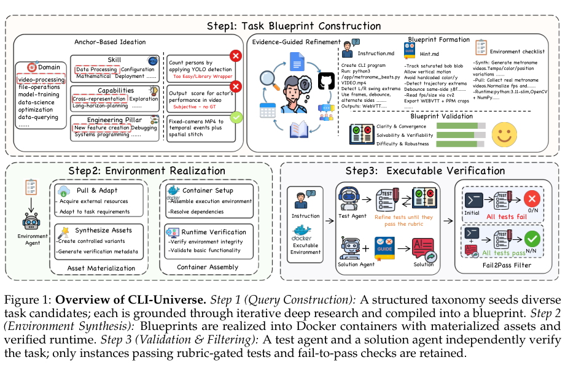
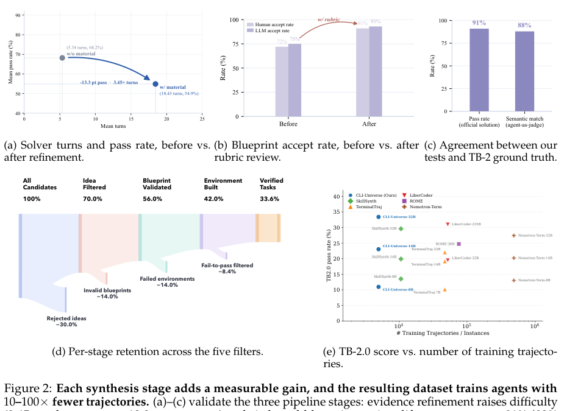
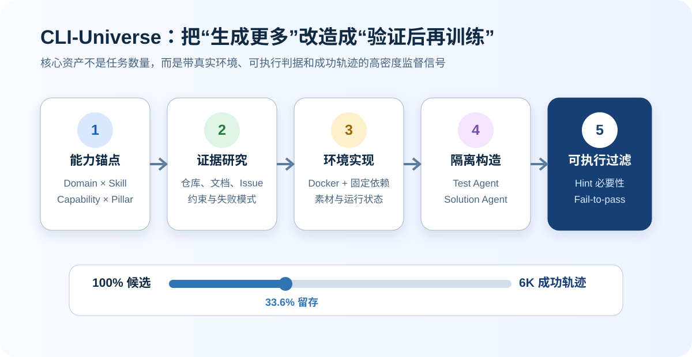
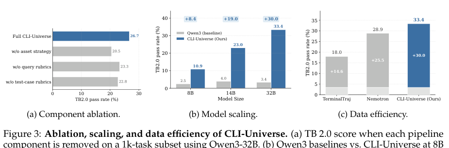
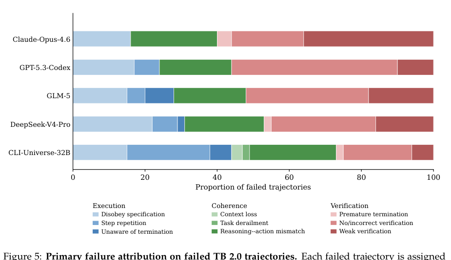

CLI-Universe：为终端 Agent 合成可验证训练任务
一句话判断
CLI-Universe 的价值不在于又造了一个终端任务数据集，而在于把训练数据生产线本身变成了一套可执行的质量系统：先规定想训练什么能力，再寻找现实证据、构建隔离环境、独立生成测试与解答，最后只保留能完成明确 fail-to-pass 状态变化的任务。
论文最强的结果是：用 6,000 条成功轨迹微调 Qwen3-32B，在 Terminal-Bench 2.0 上达到 33.4%；相同规模下高于 TerminalTraj 的 18.0% 和 Nemotron 的 28.9%。但这不能直接证明 6K 数据普遍优于大规模数据，因为环境、教师模型、训练设置和评测脚手架仍然共同影响结果。
1. 它试图解决什么问题？
终端 Agent 的训练数据很难同时满足四个条件：
- 任务真实：不是给现有文件随便编一句指令。
- 执行路径足够深：需要探索、调试、状态维护与验证，而非调用一次库函数。
- 环境可复现：依赖、服务、文件和初始状态能够重新构建。
- 成功可判定：测试必须检查真实结果，而且初态失败、正确解答后通过。
以仓库、Issue 或已有轨迹为起点的合成方法很容易扩大“来源数量”，却不一定扩大“能力覆盖”。CLI-Universe 反过来从能力空间出发：先决定 Domain、Skill Type、Capability 与 Engineering Pillar 的组合，再寻找能够支撑该组合的真实技术材料。

论文 Figure 1。上半部分把抽象能力组合逐步写成 Blueprint；下半部分才开始物化资产、构建容器并执行验证。关键区别是：Instruction、Hint、环境清单和测试目标在进入执行阶段前已经被结构化。
2. 三阶段流水线
2.1 Task Blueprint Construction
候选任务由四个维度锚定：
| 维度 | 回答的问题 | 例子 |
|---|---|---|
| Domain | 任务发生在哪里？ | 软件工程、安全、数据处理、视频处理 |
| Skill Type | 哪类知识真正承担难度？ | 系统、配置、算法、密码学 |
| Capability | 需要什么行为能力？ | 探索、错误恢复、长程规划、规格遵循 |
| Engineering Pillar | Agent 在做哪类工程活动？ | 新功能、调试、系统编程、部署 |
研究 Agent 随后检索仓库、官方文档、Issue、教程和使用案例，把抽象组合落实为具体工具、约束、输入输出协议和已知失败模式。没有足够证据支撑的候选会被丢弃。
这一步带来的不是“让任务看起来更专业”，而是让任务变难：加入真实材料后，求解器平均轮数从 5.34 增至 18.43，通过率从 68.2% 降至 54.9%。它说明精炼确实增加了执行深度，但也需要警惕另一种解释：材料和环境可能引入额外摩擦，而不全是有效能力难度。
2.2 Environment Realization
通过 Blueprint 审核后，系统把任务变成自包含 Docker 环境：
- 拉取并改造外部资源；
- 必要时合成带已知真值的素材；
- 固定依赖、服务、权限与文件路径；
- 运行安装、启动、文件布局和端到端连通性的 smoke test。
这一步很重要，因为终端任务的“答案”常常不是文本，而是修改后的文件系统、数据库、服务或构建产物。没有环境，测试只能检查 Agent 的自我报告；环境不稳定，评分又会混入基础设施噪声。
2.3 Executable Verification
测试 Agent 与解答 Agent 角色隔离：测试 Agent 不看参考解答，解答 Agent 也不看隐藏测试。测试需通过关于正确性、确定性与边界覆盖的 rubric；参考解答则在内部 Hint 指导下完成任务。
最终还有两层过滤：
- Hint-conditional filtering：没有 Hint 也能轻松完成的实例被视为训练价值不足。
- Fail-to-pass filtering：初始环境必须失败，执行参考解答后必须通过全部测试。

论文 Figure 2。候选任务经过创意、Blueprint、环境和 fail-to-pass 过滤后只留下 33.6%。这张图最重要的信息不是淘汰率本身，而是每层都绑定一个可观察质量信号：难度变化、人工/模型审核一致性、测试与基准真值的一致性，以及最终状态变化。

自制图解。CLI-Universe 把任务合成拆成连续质量门；6K 是漏斗末端的成功轨迹，而不是模型随意生成的 6K 条对话。
3. 实验结果该怎样读？
3.1 主结果
Qwen3 系列在 Terminal-Bench 2.0 上随模型规模增长：
| 模型 | 基座 | CLI-Universe 微调后 | 绝对提升 |
|---|---|---|---|
| Qwen3-8B | 2.5 | 10.9 | +8.4 |
| Qwen3-14B | 4.0 | 23.0 | +19.0 |
| Qwen3-32B | 3.4 | 33.4 | +30.0 |
32B 模型的 33.4% 高于论文列出的同规模开放数据训练模型，包括 SkillSynth-32B（29.6%）、Nemotron-Terminal-32B（27.4%）、TerminalTraj-32B（22.0%）和 LiberCoder-32B（19.5%）。它仍低于 GLM-4.7 的 41.0%，更低于闭源前沿模型约 54%–58% 的区间。

论文 Figure 3。移除资产策略、Query rubric 或测试 rubric 都会降分，说明收益不是某一个过滤器独自贡献。相同 6K 轨迹规模下，CLI-Universe 的提升更高，是论文“数据密度高于数据数量”的主要证据。
3.2 轨迹选择比“全收”更有效
论文比较了轨迹选择策略：只保留通过全部测试的 6K 成功轨迹得到 33.4%，而保留 10K 条未过滤轨迹得到 28.2%。在这个实验设置下，失败和未完成轨迹给监督微调引入的噪声大于它们提供的反例价值。
这个结论不能外推成“失败轨迹没有价值”。如果训练目标包含错误恢复、过程奖励或偏好优化，失败轨迹仍可能有用。论文证明的是：在其多轮 SFT 配置中，可执行正确性过滤是有效的数据选择规则。
3.3 泛化
32B 模型在 BFCL-v4 上从 47.4% 提升到 58.0%，在 VitaBench 上从 15.4% 提升到 27.0%。这说明训练收益并非完全局限于 Terminal-Bench 题型，但两个外部分数仍不足以排除工具调用格式、脚手架或任务分布重合造成的影响。
4. 失败分析揭示了什么？
作者把失败分为三组九类：
- Execution：不遵守规格、重复步骤、不知道何时终止；
- Coherence：上下文丢失、任务跑偏、推理与动作不一致；
- Verification：过早结束、不验证/错误验证、验证太弱。

论文 Figure 5。前沿模型的失败主要集中在验证端，但方式不同：Claude Opus 4.6 更常“验证了但验证太浅”，GPT-5.3-Codex 更常“没有验证或验证对象不对”。CLI-Universe-32B 的验证失败占比下降，但步骤重复等执行失败上升，说明数据改善了验证行为，却没有解决长程执行稳定性。
这个结果提供了一个很实用的训练诊断：当验证能力被补强后，瓶颈会转移到执行循环。下一轮数据合成不应继续简单增加更多测试，而应针对“重复命令、系统性超时、已知事实丢失、推理动作不一致”等失败构造课程。
5. 我认为最值得复用的设计
5.1 先定义能力格子，再找任务
这比从热门仓库随机抽样更适合控制覆盖率。团队可以直接检查自己的训练集是否只覆盖“软件调试”，却缺少配置、数据查询、安全或长期状态维护。
5.2 测试和解答分离
同一 Agent 同时写题、写答案和写测试，很容易把误解复制到三处。角色隔离不能消除共同模型偏差，但至少降低了直接答案泄漏和为现有实现量身定制测试的风险。
5.3 用状态变化定义可验证性
fail before → pass after 比“参考答案能运行”强得多。前者证明测试可以区分未完成与已完成状态，后者可能只是一个始终返回成功的空测试。
5.4 把淘汰率当作质量信号
约三分之二候选被丢弃并不是管线低效的证据。只要每层过滤都有明确理由、失败记录和成本统计，高淘汰率恰恰说明生成器与验证器没有共谋放水。
6. 局限与待验证问题
- 教师与验证器仍是 LLM：角色隔离不能消除共享盲点，特别是测试语义是否真的覆盖用户目标。
- 只展示 6K 规模：论文没有证明继续扩大任务池时，真实技术材料、容器资源和测试审核成本能线性扩展。
- 环境成本没有完整展开：Docker 化、依赖拉取、服务启动和多 Agent 验证可能显著提高每个可用样本的成本。
- 基准闭环风险：能力分类来自对终端任务模式的总结，最终又主要在 Terminal-Bench 上验证，仍需更多异分布真实任务。
- 成功轨迹偏好：SFT 只保留成功轨迹效果最好，但可能削弱模型识别失败、回滚与请求帮助的能力。
- 与前沿模型仍有差距：33.4% 是开放数据、小于等于 32B 模型中的强结果，不代表已经接近可靠终端 Agent。
7. 最终结论
CLI-Universe 最重要的观点可以概括为：
终端 Agent 的数据瓶颈不是缺少更多自然语言任务，而是缺少能在真实环境中证明“之前失败、之后成功”的监督单元。
如果要复用这项工作，我不会先复制它的 6K 数据，而会先复制它的生产纪律：能力覆盖表、证据来源、环境清单、测试/解答隔离、Hint 必要性检查和 fail-to-pass 门禁。真正可迁移的是这套验证结构。